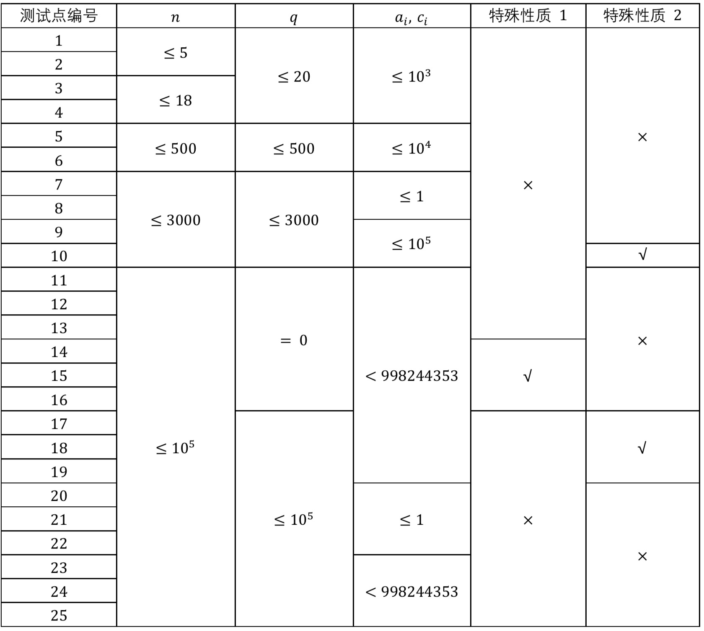

Comet OJ
Comet OJ第一行，包含一个正整数 $n$ ，为魔法学院阵营的人数。
第二行，包含 $n$ 个非负整数 $a_1,\,\cdots,\,a_n$ ，其中 $a_i$ 表示初始第 $i$ 个人的战斗力。
第三行，包含一个整数 $q$ ，为调整阵形的次数。
接下来 $q$ 行，其中第 $i$ 行包含两个正整数 $x_i,\,c_i$ ，表示第 $i$ 次调整第 $x_i$ 个人被替换成了一个战斗力为 $c_i$ 的人。
※ 下发文件链接 （有更新）密码：wzayqj ，本题英文名为 $\texttt{relation}$ ，不需要 freopen 。
※ 备用文件链接 无需密码点击即可下载，本题英文名为 $\texttt{relation}$ 。
※ 跳过剧情的同学请从分割线开始看哦~
ω 冲出了被毁的学院，无数黑暗魔法的光影在她身边炸开，她狼狈地在地上翻滚了一下，本来洁白的法师袍此时已经混杂着黑色的污渍和暗红色的已经凝固的血液。
奔跑，奔跑，奔跑。
ω 脑子里一片空白。同伴们在她的安排下都离开了，她的逃离计划里只有一个人没考虑到------她自己。
极目远望，那个之前只存在于 Ω 老师古老故事里的大魔王 Ψ ，此时竟若隐若现地出现在远方，随时可能向自己发出致命一击。
无路可走，唯有背水一战。
「就算是死，也要让 Ψ 付出应有的代价！」ω 坚定不移地举起法杖，正准备开始法术的吟唱时，身后已有无数的各类法术如洪流般奔涌而出。
「你们……」ω 猛然回首，无数同伴的身影都在。魔法学院的老师、同学组成了一个巨大的阵形，其中 ε 冲在阵形的最前方------当然还少不了她那尚是半吊子的火球术。
「我绝不会抛弃你的！」ε 一边奔跑着一边大喊着，一边挥舞着法杖发出一道道法术。
「……都来了。」ω 的眼眶已然湿润。
「全员，准备进攻！」ω 怒吼着，拉开了大战的帷幕。
魔法学院阵营共有 $n$ 个人，第 $i$ 个人的战斗力是 $a_i$ 。她们会调整 $q$ 次阵形，第 $i$ 次调整会将第 $x_i$ 个人替换成一个战斗力为 $c_i$ 的人。
发起进攻时，每个人分别有 $\frac{1}{2}$ 的概率做好攻击准备。定义该次进攻的伤害值为 $d$ 。进攻前 $d = 0$ ，战斗力为 $k$ 的人攻击后，进攻的伤害值变为 $\frac{d + k}{2}$ 。由于所有做好攻击准备的人都会且仅会攻击一次，她们会安排攻击顺序使得最终 $d$ 的值尽量大。
请你帮 ω 分别求出调整阵形之前以及 $q$ 次调整每次调整之后进攻伤害 $d$ 的期望值对 $998244353$ 取模的结果（设期望值等于最简分数 $\frac{P}{Q}$ ，你输出的结果 $R$ 是满足 $R \times Q \equiv P\ (\text{mod}\ 998244353)$ 的最小非负整数）。
第一行，包含一个正整数 $n$ ，为魔法学院阵营的人数。
第二行，包含 $n$ 个非负整数 $a_1,\,\cdots,\,a_n$ ，其中 $a_i$ 表示初始第 $i$ 个人的战斗力。
第三行，包含一个整数 $q$ ，为调整阵形的次数。
接下来 $q$ 行，其中第 $i$ 行包含两个正整数 $x_i,\,c_i$ ，表示第 $i$ 次调整第 $x_i$ 个人被替换成了一个战斗力为 $c_i$ 的人。
共 $q + 1$ 行，其中第一行输出一个整数表示调整阵形之前发起进攻 $d$ 的期望值，第 $i + 1$ 行（$1 \le i \le q$）输出一个整数表示第 $i$ 次调整之后发起进攻 $d$ 的期望值，你输出的期望值应在 $998244353$ 模意义下。
2
8 18
2
1 9
2 186
811073543
8110735436
114 514 19198 10 11451 41919
3
1 1451
4 1919
2 60817505474442
41446924
662425254
616862282见下发文件中 relation3.in见下发文件中 relation3.ans
对于具有 特殊性质 1 的数据，有 $a_1=a_2=\cdots=a_n$ 。
对于具有 特殊性质 2 的数据，有 $x_1=x_2=\cdots=x_q$ 。
对于所有的数据，保证 $1 \le n \le 10^5 ,\ 0 \le q \le 10^5,\ 1 \le x_i \le n,\ 0 \le a_i ,\, c_i < 998244353$ 。